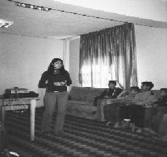

İnsanların karşılıksız hiçbir şey yapmadığı günümüzde, karşılıksız iyilik yapmanın tarifsiz mutluluğunu yaşıyorum hayata dair verdiğim seminerlerde. (Gülçin Demircan)
Gülçin gittiği her yere değer katar. Şimdi Iğdır'da öğretmenlik yapıyor. Böcekliğini yaptı ve okula kütüphane kurduk hep beraber, sayesinde. Gülçin en çok eğitim veren ilk beş böcekten biri. Şahane bir öğretmen ve örnek verdiğim memurlardan biri olacak.